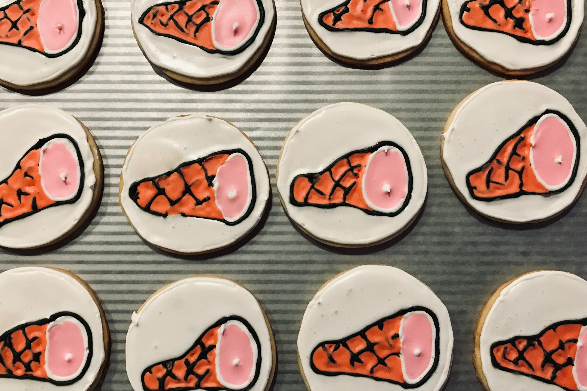

Highlights.

Maple Bacon Ice Cream with Waffles

Roasted Clementine and Chocolate Tart with a Macadamia Nut Crust

This is my preferred recipe.
(from Cook’s Illustrated May/June 2009)
1¾ cups (246 grams) unbleached all-purpose flour
½ teaspoon (4 grams) baking soda
14 tablespoons (199 grams) unsalted butter
½ cup (115 grams) granulated sugar
¾ cup (180 grams) packed dark brown sugar
1 teaspoon (7 grams) salt
2 teaspoons vanilla extract
1 large egg
1 large egg yolk
1¼ to 2¼ cups of semisweet chocolate chips or chunks *
1. Adjust oven rack to middle position and heat oven to 375 degrees. Line 2 large baking sheets with parchment paper.
2. Whisk flour and baking soda together in medium bowl; set aside.
3. Heat 10 tablespoons butter in a light colored skillet over medium-high heat until melted, about 2 minutes. Continue cooking, swirling pan constantly until butter is dark golden brown and has nutty aroma, 1 to 3 minutes (could be much longer depending on your stove). Keep an eye on it. Don't be afraid to push it to just about the point of burning. (I consider the butter is done browning when it smells like burnt toast.) Remove skillet from heat and, using heatproof spatula, transfer browned butter to large heatproof bowl. Stir remaining 4 tablespoons butter into hot butter until completely melted.
4. Add both sugars, salt and vanilla to bowl with butter and whisk until fully incorporated. Add egg and yolk and whisk until mixture is smooth with no sugar lumps remaining, about 30 seconds. Let mixture stand for 3 minutes, then whisk for 30 seconds. Repeat process of resting and whisking 2 more times until mixture is thick, smooth and shiny. Using rubber spatula or wooden spoon, stir in flour mixture until just combined, about 1 minute. Stir in chocolate chips, giving dough final stir to ensure no flour pockets remain. If the dough looks too fluid, give it time to rest and firm up.
5. Divide dough into 16 portions, each about 3 tablespoons (or use a #24 cookie scoop). Arrange 2 inches apart on prepared baking sheets, 8 dough balls per sheet.
6. Bake cookies 1 tray at a time until cookies are golden brown and still puffy, and edges have begun to set but centers are still soft, 10-14 minutes, rotating baking sheet halfway through baking. Transfer baking sheet to wire rack; cool cookies completely before serving. These are even better the second day.
* This is merely a starting point. I typically use about 400g of chocolate. My current favorite blend is one part hand chopped Trader Joes Pound Plus 72% Dark Chocolate bar. One part Nestlé Toll House Semi-Sweet Morsels. One part broken Belcolade Bittersweet Discs 60% cocoa (courtesy King Arthur Flour).
I would love to bake chocolate chip cookies (or some other delicious creation) for you.
Email me at jeff@whatisjeffbaking.com and let me know what's on your mind.
Follow along.
We're on and